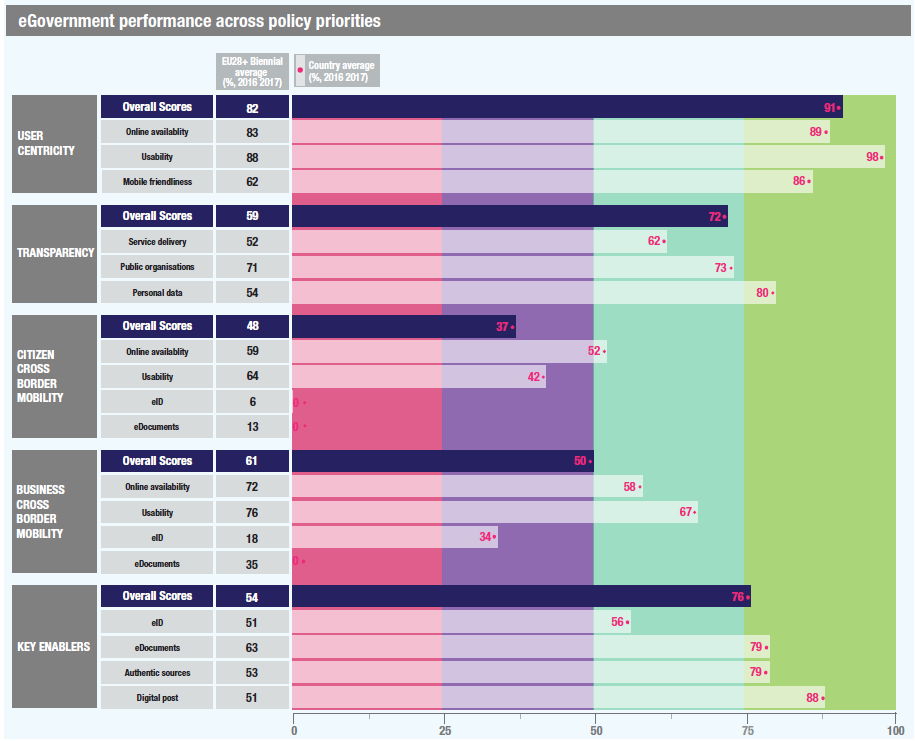

Digital Government Factsheet 2019
Iceland
Table of Contents
Digital Government Highlights 6
Digital Government Political Communications 7
Digital Government Legislation 12
Digital Government Governance 14
Digital Government Infrastructure 17
Digital Government Services for Citizens 22
Digital Government Services for Businesses 29
Country Profile
Basic data
Population: 384 450 inhabitants (2018)
GDP at market prices: 21 706 million Euros (2017)
GDP per inhabitant in PPS (Purchasing Power Standard EU 28=100): 130 (2017)
GDP growth rate: 4% (2017)
Inflation rate: 0.7% (2018)
Unemployment rate: 2.7% (2018)
General government gross debt (Percentage of GDP): No data available
General government deficit/surplus (Percentage of GDP): No data available
Area: 103 000 km²
Capital city: Reykjavik
Currency: ISK
Source: Eurostat (last update:15 March 2019)Digital Government Indicators
Percentage of individuals using the internet for interacting with public authorities in Iceland | Percentage of individuals using the internet for obtaining information from public authorities in Iceland |
| |
Percentage of individuals using the internet for downloading official forms from public authorities in Iceland | Percentage of individuals using the internet for sending filled forms to public authorities in Iceland |
Digital Government State of Play
The graph below is the result of the latest eGovernment Benchmark report, which monitors the development of eGovernment in Europe, based on specific indicators. These indicators are clustered within four main top-level benchmarks:
- User Centricity – indicates to what extent (information about) a service is provided online and how this is perceived.
- Transparency – indicates to what extent governments are transparent regarding: i) their own responsibilities and performance, ii) the process of service delivery and iii) personal data involved.
- Cross-Border Mobility – indicates to what extent EU citizens and businesses can use online services in another country.
- Key Enablers – indicates the extent to which five technical pre-conditions are available online. There are: Identification (eID), Electronic documents (eDocuments), Authoritative Sources, and Digital Post. Digital Post refers to the possibility that governments communicate electronically-only with citizens or entrepreneurs through e.g. personal mailboxes or other digital mail solutions.
These top-level benchmarks are measured using a life-events (e.g. mystery shopping) approach. Eight life events are included in the overall eGovernment performance score. Four of these life events were measured in 2013, 2015 and 2017 and the other four were measured in 2012, 2014, 2016, and again in 2018. The life events measured in 2017 were Regular business operations, Moving, Owning and driving a car and Starting a small claims procedure. The life events measured in 2018 are Business start-up, Losing and finding a job, Family life and Studying.

Source: eGovernment Benchmark Report 2018 Country Factsheet
Digital Government Highlights
Digital Government Political Communications
Digital Government Legislations
There have been no changes in Digital Government Legislation in the reporting year.
Digital Government Governance
Digital Government Infrastructure
Digital Government Services for Citizens and Businesses
There have been no changes in Digital Government Services for Citizens and Businesses in the reporting year.
Digital Government Political Communications
Specific political communications on digital government
SAFT: Community, Family and Technology (2018)
- An Awareness Centre for informing children, their parents and teachers about better and safer use of the internet, building on enhanced digital resource centres (repositories), from which specific awareness toolkits and services are adapted and deployed;
- Online helpline services for reporting and dealing with harmful contact (grooming), conduct (cyberbullying) and content by one-to-one conversations, online and by phone, with trained counsellors to give advice and support to children, parents and other concerned target groups.
- A hotline for receiving and managing reports and data on online illegal child sexual abuse, hate speech and discrimination, that maintains partnerships with police and law enforcement, hosters and ISP’s.
The three components of the SIC cooperates by setting up a single Advisory Board with national stakeholders including relevant industry partners. The SIC also is closely operating with children and young people through a dedicated Youth Platform.
The beneficiaries are further developing their role of providing generic services and closely coordinate their activities with the core service platform and with the Insafe and INHOPE networks.
Policy and action plan 2017-2019Statistical analyses, assessments and evaluations are imperative for measuring the impact of research and innovation and they serve as the basis for evidence-based policy-making. The overarching aim of the Science and Technology Council Policy is that investment in research and development will reach 3% of GDP by the year 2024. The action plan 2017-2019 foresees ten main actions to be undertaken, divided in five thematic areas:
- Research and development in an ever-changing world:
- Action 1: Through regular and wide consultations Iceland´s major societal challenges were defined and dealt with in a consistent manner.
- Active participation in the knowledge society:
- Action 2: A three-year strategic programme was promoted to enhance the status of the Icelandic language in computers and technology.
- Action 3: A strategy for dissemination of research and technology from universities and research institutions to the public, all school levels and government was implemented.
- Quality education and key skills:
- Acton 4: The quality and performance of universities were strengthened, among other things through increased funding with the aim to achieve OECD’s average in 2020 and the average of the Nordic countries in 2025.
- Action 5: The funding model for universities was reviewed with the aim of providing better support for quality.
- Action 6: The Science and Technology Council evaluated the conclusions of the expert group on human resources and skills projection for the Icelandic labour market.
- Progressive companies and innovation:
- Action 7: The tax environment for research and innovation in Iceland was revised. An impact assessment on the recent legislative amendments was made and proposals submitted on how the tax environment should be further developed towards the best examples in our neighbouring countries.
- Action 8: The innovation support system and its institutional structure were reviewed in order to improve progress and competitiveness of economic activities equivalent to what is best in neighbouring countries.
- Strategic development of research infrastructure:
- Action 9: A roadmap for research infrastructures was developed and international participation in research infrastructure was strengthened.
- Action 10: A policy was developed on open access to data.
Financial Plan 2019-2023
Government ministries have identified the following topics as areas to focus on for the 2019-2023 Financial Plan:
- Disclosure of information and operation of the basic files on important rights;
- Statistics, coordination of statistics and economic research;
- Electronic solutions, information and service providers and certificate issuance;
- Infrastructure, procurement, maintenance and dissemination of country information;
- Strategy, implementation and coordination of public administration and information technology in the public sector.
The main objective is to make public services the principle of self-regulation and to ensure that the administrative data is safe, timely and only recorded once, as well as protected by the best technical solutions at any given time. Statistics are based on reliable data, serve the needs of informed discussion and decision-making in society and fulfil international commitments. Public sector services are based on information systems that meet ever-changing needs and the technical demands of the public and industry. The public and industry can access open-source data in one place with unsolicited information, monitor various issues discussed in the administration, and participate in the transparent reporting process for draft proposals, regulations and policy papers. Public data will be free of charge and reusable as much as possible.
Key enablers
Access to public information
No political communication was adopted in this field to date.
eID and Trust Services
No political communication was adopted in this field to date.
Security aspects related to digital government
National Cyber Security Strategy 2015 - 2026
- Capacity building: the public, enterprises and government should have the knowledge, skills and equipment needed to cope with cyber security threats.
- Increased resilience: key factors in enhanced resilience are greater capacity in the fields of assessment, preparedness and response.
- Strengthened legislation: legislation should reflect the international demands and obligations the country undertakes regarding cyber security and the protection of personal data; and it must also support innovation and the development of security-related services like hosting.
- Tackling cybercrime: the police should have access to the professional knowledge, skills and equipment needed to resolve issues concerning cyber security.
A special Cyber Security Council has been appointed, consisting of representatives of the government bodies involved in the implementation of the strategy, in order to put the cyber security strategy into action. The stakeholders (public and private entities) shall be represented by another established body – the Cyber Security Forum.
As part of the National Cyber Security Strategy, society's knowledge of the possibilities and uses of information technology shall be enriched, with the purpose of applying technology in the optimal manner for creating employment, improving services, effectiveness in all respects and increasing democratic participation. The focus shall be on building up knowledge among students, managers and other State or municipal personnel, and in groups who have limited acquaintance of information technology.
Interconnection of base registries
eGovernment policy 2013-2016
Regarding base registries, data accessibility and reusability, the eGovernment policy 2013-2016 includes an action to provide base registry (master) data as open data. Some registries make their date available at no cost on the open data portal such the Land Registry, Address Registry, Map of Estimated Farmland Registry, etc.
eProcurement
No political communication was adopted in this field to date.
Domain-specific political communications
No political communication was adopted in this field to date.
Interoperability
A unique IT supplier for the entire public sector
The introduction of Microsoft 365 will consolidate all services into a single license, as well an increased communication and collaboration between institutions.
Even if the decision could lead to an increased interoperability among different public bodies, the risk of a vendor lock-in is higher.
National Interoperability Framework
Emerging technologies
No political communication was adopted in this field to date.
Digital Government Legislation
Specific legislation on digital government
Information Act
The Information Act was approved by the parliament at the end of 2012 and came into force on 1 January 2013. Its objective is to guarantee transparency in government administration and the handling of public interests, inter alia with the purpose of strengthening the following:
The right to information and the freedom of expression;
Possibilities for the public to participate in a democratic society;
The restraints exercised by the media and the public on government authorities;
Possibilities for the media to communicate information on public affairs;
Public confidence in government administration.
This act applies to all government activities and private entities owned by the state (51% of shares or more).
After the adoption of Act No. 140/2012, the older Information Act No. 50/1996 only applies to municipalities with fewer than 1 000 citizens until 1 January 2016.
Administrative Procedures Act
On 10 March 2003, the Administrative Procedures Act (No.37/1993) was amended (No.51/2003), adding a special chapter on the electronic handling of matters by the Public Administration. Through this modification, general obstacles to the development of electronic administration were removed. While formulating the amendment, the committee in question was guided by the concept of equivalent value, and also emphasised the need to maintain technical impartiality. The alteration involved permission for the electronic handling of governmental administration cases, but not an obligation.
Key enablers
Access to public information
Re-use of Public Sector Information (PSI)
Conditions on the re-use of public sector information are partly covered by the Information Act (No.50/1996). The Act defines public access to information and the restrictions on the right to information. In relation to the European Directive on the re-use of Public Sector Information (PSI Directive, 2003/98/EC), the Act includes almost all items with the exception of access and re-use of information through electronic means such as databases.
eID and Trust Services
Regulation on electronic signatures
The Regulation No. 780/2011 on electronic signatures applies to the information to be included in qualified certificates, requirements of certification service providers who issue qualified certificates, requirements for secure signature creation devices, the mechanism for the registration, notifications and disclosures of certification service providers and the mechanisms of regulation of certification service providers issuing qualified certificates.
An electronic signature made using a qualified certificate does not constitute confirmation of the time of signature creation.
Act on Electronic Signatures
Based on a similar EC Directive, article 4 of the Act on Electronic Signatures, No. 28/2001 stipulates that fully qualified electronic signatures shall have the same force as handwritten signatures. Furthermore, it stipulates that other electronic signatures can be legally binding. Supporting legislation comes from the Electronic Commerce Act, 2002 and the Administrative Procedures Act, as amended in 2003.
Security aspects related to digital government
Act on the Protection of Privacy as regard the Processing of Personal Data
The Act on the Protection of Privacy as regards the Processing of Personal Data (No. 77/2000) was passed in 2000 and came into effect on 1 January 2001. The act implements the EC Data Protection Directive (95/46/EC) and deals with how the protective principle relates to data quality, and presents criteria for the legitimacy of data processing. The act applies to any automated processing of personal data and to manual processing of such data if it is, or is intended to become, a part of a file.
Interconnection of base registries
No political communication was adopted in this field to date.
eProcurement
Act on Public Purchasing
The older Public Procurement Act was replaced with Act No. 84/2007, a new comprehensive Act on Public Purchasing. The Act incorporated the eProcurement provisions of European Directives 2004/17/EC and 2004/18/EC. Rules on the use of electronic transmission were liberalised regarding public procurement and dynamic procurement systems; the Act furthermore regulated the use of eAuctions. Other provisions of the previous legislation, such as the rules of procedure, remained largely unchanged.
Domain-specific legislation
Act on Electronic Commerce and other Electronic Services
The Act on Electronic Commerce and other Electronic Services, No. 30/2002 states that electronic contracts are equivalent to written contracts and that electronic services provided by a service provider established in Iceland shall conform to Icelandic law on the establishment and operation of the service. The Act does not apply to electronic services relating to taxation. However, in this field, there are two main acts applying to electronic commerce: the Income Tax Act, No. 90/2003, and the Value Added Tax Act, No. 50/1988. According to the former, a legal entity is taxable in Iceland if it is domiciled in this country. The latter introduced several special provisions concerning imports.
Interoperability
No legislation was adopted in this field to date.
Emerging technologies
No legislation was adopted in this field to date.
Digital Government Governance
National
Policy
Network Society Council
The role of the Network Society Council is, amongst other things, to follow the implementation of government and network security policies for the period 2015-2026. In cooperation with stakeholders, it will set up a Network and Information Society Consultation Group. The Council will, after consulting, formulate action proposals, regularly write reports on their performance, and make government proposals for actions as required. At the same time, the Network Security Council is consulted on issues relating to network and information security.
Ministry of the Interior
Sigurður Ingi Jóhannsson Minister of Transport and Local Government Contact details: Ministry of the Interior Sölvhólsgata 7 150 Reykjavik Tel.: +354 545 9000 Fax: +354 552 7340 E-mail: N/A |
Coordination
Information Society Taskforce
The policy is coordinated and supervised by a special project management team, the 'Information Society Taskforce' (or eGovernment Taskforce), operating under the auspices of the Ministry of the Interior. The Taskforce focuses on eGovernment issues in the policy and coordinates Central eGovernment and Local eGovernment projects. This includes assisting public institutions and Association of local Authorities in their efforts towards achieving the policy’s main objectives. The Chairman of the Taskforce leads the efforts to increase the use of IT to improve eServices to citizens and to increase the effectiveness of government services.
Guðbjörg Sigurðardóttir Director of Information Society Affairs Contact details: Ministry of the Interior Sölvhólsgata 7 150 Reykjavik Tel.: +354 545 9000 Fax: +354 552 7340 E-mail: gudbjorg.sigurdardottir@irr.is |
Implementation
Government offices and public bodies
eGovernment implementation is highly decentralised and is undertaken by the Government offices (ministries) and other public bodies according to their role(s) and subject(s). All ministries and two representatives from local government form the eGovernment Taskforce. In the current eGovernment strategy: ePower Expansion, the future vision is to make sure that public services are built with democracy, efficiency and the needs of people and industry in mind. A solid knowledge of information technology, along with access to government data, will promote innovation and business growth. The general public will affect public-sector decisions by helping to prepare them through online, open, and transparent consultations.
Support
No responsible organisations were reported to date.
Base registry coordination
Audit
No responsible organisations were reported to date.
Data Protection
Subnational (federal, regional and local)
Policy
Ministry of the Interior
Coordination
No responsible organisations were reported to date.
Implementation
Association of Local Authorities
Support
No responsible organisations were reported to date.
Base registry coordination
No responsible organisations were reported to date.
Audit
No responsible organisations were reported to date.
Data Protection
No responsible organisations were reported to date.
Digital Government Infrastructure
Portals
Island
This portal played a central role in the new policy formulation for the Information Society for 2013 - 2017. It has three main functions:
It operates as a government information and service portal. It provides easy access to information on public services and to a large number of public forms.
It operates as a toolbox. Tools which are of use to all public bodies have been developed on the island.is website. These include centralised authentication, electronic document delivery (C2G and B2G), electronic document distribution (G2C and G2B) and an electronic service layer.
Since May 2011 it has provided a 'My pages' services. There people obtain individualised access to information about themselves in key registers owned by the authorities and access to documents sent to them electronically by public bodies.
EUGO
Multicultural Information Centre
UT-Web of Information Technology
UT-Web of Information Technology is a comprehensive portal that provides useful information on IT matters. This portal is mainly targeted towards people working in IT-departments and managers in public institutions. Nevertheless, since the portal is of a general nature, it can be of use to anyone who seeks information on information technology and eGovernment. The Department of Administrative and Social Development at the Prime Minister’s Office is responsible for the portal. The UT-Web has been operating since January 2006.
Networks
FS Net
Data Exchange
Straumurinn
eID and Trust Services
Íslandsrót Certification Authority
eProcurement
Rikiskaup
eInvoicing
eInvoicing
Upon completion of the implementation, the beneficiaries will carry out interoperability and eInvoicing conformance tests. Communication activities will be also be carried out to disseminate the project results at European level and from both the consortium and each entity perspective.ext.
ePayment
No particular infrastructure in this field was reported to date.
Knowledge Management
Menntagatt: The Educational Gateway
This portal provides schools with convenient access to information and services on the Internet. Content is being recorded and linked to courses, academic subjects and curriculum goals. The Educational Gateway built on a public-private partnership, is run by a private company and intends to integrate the content and services provided by public and private parties.
Tungutaekni website
Hvar
Vísindavefur
Cross-border platforms
EUCARIS, EULISSTORK
Base registries
Current Status
- The National Population and Properties Registry is managed by the Ministry of Interior/Central Government and master data related to personal data (natural and legal persons) and property data are available;
- The Vehicle Registry is managed by the Ministry of Interior/Regional Government and master data related to vehicles is available;
- The Business Registry is managed by the Ministry of Industries and Innovation and master data related to business and legal persons are available; and
- Property Registry is managed by the Ministry of Interior and master data related to land and properties are available.
There are also data sharing agreements in place:
- The National Population Registry is distributed by brokers throughout the society and widely used, both by public and private entities. Public authorities have access to more information than private entities to be able to fulfil their duties. The entities pay for the usage according to an agreement with Registers Iceland.
- The Properties Registry is both accessible online and shared to various entities. The entities pay for the usage according to an agreement with Registers Iceland.
- The Business Registry is both accessible online and shared to various entities. The entities pay for the usage according to an agreement with Registers Iceland.
Digital Government Services for Citizens
The information in this section presents an overview of the basic public services provided to the citizens. These were identified taking inspiration from Your Europe, a website which aims to help citizens do things in other European countries – avoiding unnecessary inconvenience and red tape in regard to moving, living, studying, working, shopping or simply travelling abroad. However, the categories used in this factsheet aim to collect a broader range of information, focusing therefore not only on cross-border services, but also on national services.
The groups of services for citizens are as follows:
- Travel
- Work and retirement
- Vehicles
- Residence formalities
- Education and youth
- Health
- Family
- Consumers
Travel
Documents you need for travel in Europe | |
Passport | |
Responsibility: | Central Government, Ministry of the Interior |
Website: | |
Description: | The application for a passport is a fully automated electronic procedure where application forms are not needed. |
Multicultural Information Centre | |
Responsibility: | Ministry of Welfare |
Website: | |
Description: | The Multicultural Information Centre is a portal designed to provide assistance to immigrants through an extensive number of services. Its fundamental role is to facilitate communications between individuals from different backgrounds, and to enhance the services provided to foreign citizens residing in Iceland and to those interested in moving to Iceland. Among other services, the Multicultural Centre offers assistance through telephone in English, Polish, Serbian/Croatian and Thai. The portal is the responsibility of the Ministry of Welfare, established on 1 January 2011. |
Work and retirement
Working abroad, finding a job abroad, retiring | |
Job search services by labour offices | |
Responsibility: | Central Government, Ministry of Welfare, Directorate of Labour |
Website: | |
Description: | Fully functional job search online service with multilingual information on jobs. All services offer pre-selected jobs related to the profile of the job searcher. Vacancies are automatically published in the European Employment Services Job Mobility Portal. |
Unemployment & benefits | |
Unemployment benefits | |
Responsibility: | Central Government, Ministry of Welfare, Directorate of Labour |
Website: | |
Description: | Citizens apply electronically and follow the entire application procedure through the web. Case handling and decision-making is web based. One exception: The applicant has to show up once, show his/her ID and sign the application. S/he also has to bring some certificates on paper, e.g. certificates from former employees. |
Taxes | |
Income taxes: declaration, notification of assessment | |
Responsibility: | Central Government, Ministry of Finance, Directorate of Internal Revenue |
Website: | |
Description: | Businesses have submitted electronic tax returns since 1997, and individuals since 1999. The system offers online guidance and has pre-entered all data that a tax payer needs to fill in. Rule-based auditing is also in place. Over 90% of the tax payers file electronically. |
Vehicles
Driver’s license | |
Responsibility: | Regional Government, Ministry of the Interior |
Website: | |
Description: | Information is available, enabling citizens to start the procedure in order to obtain a driving licence. |
Registration | |
Car registration (new, used, imported cars) | |
Responsibility: | Central Government, Ministry of the Interior, Road Traffic Directorate |
Website: | |
Description: | Change of ownership must be confirmed through a bank. Payment is also done through the bank. Each partner involved must log into his/her personalised web page at the bank and confirm the change of ownership. When all partners have confirmed the change of ownership and payment has been completed, all partners receive a confirmation email. |
Residence formalities
Consumer protection / Consumer issues | |
Responsibility: | Registers Iceland |
Website: | |
Description: | The portal operates as government information and service portal. It provides easy access to information on public services and to a large number of public forms. In the area of consumer protection, the following areas are covered: advice and legal assistance (complaints and guarantees, consumer advice, etc.), pricing and price labels, product safety, and purchases and contracts. |
Documents and formalities | |
Announcement of moving (change of address) | |
Responsibility: | Central Government, Ministry of the Interior |
Website: | |
Description: | A form (PDF), available on the web, can be filled in electronically, then printed out and sent by mail or fax. |
Certificates (birth, marriage): request and delivery | |
Responsibility: | Central Government, Ministry of the Interior, Multicultural and Information Centre |
Website: | http://www.mcc.is/english/eng-administration/registers-iceland/ |
Description: | Request for a certificate can be sent by email, or by a special enquiry form. |
Criminal Record Certificate | |
Responsibility: | District Commissioners |
Website: | N/A |
Description: | If a person lives in Iceland, s/he should apply in person at the District Commissioner (Syslumadur) in the corresponding municipality (see Special notes and considerations for complete address). If a person lives outside of Iceland, s/he must provide a written authority to a representative in Iceland to request the certificate on his/her behalf by fax or email. |
Declaration to the police (e.g. in case of theft) | |
Responsibility: | Central Government, Ministry of the Interior, Icelandic Police |
Website: | |
Description: | The police scan incoming mail or inquiries submitted online through the standard inquiry form and responds either by phone, or by visiting a given address. This has to be followed up by a formal written report. |
Housing (building and housing, environment) | |
Responsibility: | Local Government (Municipalities) |
Website: | |
Description: | Most municipalities have PDF forms available on the web. |
Education and youth
School | |
Educational Gateway | |
Responsibility: | Institute of Education (Menntamálastofnun) |
Website: | |
Description: | Iceland's 'Educational Gateway' features catalogued educational content and searches related to curricular goals, teaching instructions, pictures, interactive examinations, and other educational topics (in Icelandic, with some information in English and Danish). |
Public libraries (availability of catalogues, search tools) | |
Responsibility: | Central Government and Municipalities forming Gegnir, 'The Icelandic Library Consortium', Ministry of Education, Science and Culture |
Website: | |
Description: | The Icelandic Library Consortium runs a union catalogue for Icelandic libraries, known as Gegnir. The company's purpose is to run a central, web-based library system for most of the libraries in Iceland. |
University | |
Enrolment in higher education/university | |
Responsibility: | Central Government, Ministry of Education, Science and Culture |
Website: | http://www.hi.is/; http://www.unak.is/; http://www.bifrost.is/; http://www.ru.is/ |
Description: | Information only. |
Researchers | |
Information and assistance to researchers | |
Responsibility: | EURAXESS Iceland |
Website: | |
Description: | EURAXESS Iceland provides information and assistance to mobile researchers – by means of the web portal and with the support of the national EURAXESS Service Centres. The portal contains practical information concerning professional and daily life, as well as information on job and funding opportunities. |
Research funding support | |
Responsibility: | The Icelandic Centre for Research (Rannis) |
Website: | |
Description: | Rannis administers the main public competitive funds in the fields of research, innovation, education and culture in Iceland. Rannis coordinates and promotes Icelandic participation in European cooperation programmes, such as Horizon 2020, Erasmus+ and Creative Europe, as well as other international programmes. Information on available national funding opportunities for the researchers can be found on the website, as well as open calls for proposals. |
Health
Health related services (interactive advice on the availability of services in different hospitals; appointments for hospitals) | |
Responsibility: | Central Government, Ministry of Welfare |
Website: | http://www.fsa.is (North region); http://www.fsi.is (North West region); http://www.hsa.is (East region); http://www.hve.is/ (West region); http://www.hjarta.is (Hjartavernd, The Icelandic Heart Association) |
Description: | At the national, regional and local hospitals and health care centres, the patient has to make an appointment by phone. Booking online is done by the private company Hjartavernd. |
Medical costs (reimbursement or direct settlement) | |
Responsibility: | Central Government, Ministry of Welfare, Social Insurance Administration |
Website: | http://www.tr.is/ (Information) |
Description: | Discount cards are sent out automatically to those who are entitled (have reached a certain level of total cost). This is based on information from private practicing doctors, hospitals and health care centres. If people have paid too much, they will be automatically reimbursed; that sum will be deposited in a bank account. |
Family
Certificates (birth, marriage): request and delivery | |
Responsibility: | Central Government, Ministry of the Interior, Multicultural and Information Centre |
Website: | http://www.mcc.is/english/eng-administration/registers-iceland/ |
Description: | Request for a certificate can be sent by email, or by a special enquiry form. |
Child allowances | |
Responsibility: | Central Government, Ministry of Finance, Directorate of Internal Revenue |
Website: | |
Description: | This service is automatically granted by the tax authorities after receipt of annual tax declaration. |
Consumers
Shopping | |
Consumer protection / Consumer issues | |
Responsibility: | Registers Iceland |
Website: | |
Description: | This portal operates as the government information and service portal. It provides easy access to information on public services and to a large number of public forms. In the area of consumer protection, the following areas are covered: advice and legal assistance (complaints and guarantees, consumer advice, etc.), pricing and price labels, product safety, and purchases and contracts. |
Financial products and services | |
Savings and finances | |
Responsibility: | Registers Iceland |
Website: | |
Description: | This portal operates as the government information and service portal. It provides easy access to information on public services and to a large number of public forms. In the area of financial information, two areas are covered: finances (payment difficulties, security net) and taxes (personal taxes, taxes on goods and services). |
Unfair treatment | |
Consumer protection | |
Responsibility: | Registers Iceland |
Website: | |
Description: | This portal operates as the government information and service portal. It provides easy access to information on public services and to a large number of public forms. In the area of consumer protection, the following areas are covered: advice and legal assistance (complaints and guarantees, consumer advice, etc.), pricing and price labels, product safety, and purchases and contracts. |
Consumer dispute resolution | |
Consumer issues | |
Responsibility: | Registers Iceland |
Website: | |
Description: | The portal operates as the government information and service portal. It provides easy access to information on public services and to a large number of public forms. In the area of consumer protection, the following areas are covered: advice and legal assistance (complaints and guarantees, consumer advice, etc.), pricing and price labels, product safety, and purchases and contracts. |
Digital Government Services for Businesses
The information in this section presents an overview of the basic public services provided to the Businesses. These were identified taking inspiration from Your Europe, a website which aims to help citizens do things in other European countries – avoiding unnecessary inconvenience and red tape in regard to moving, living, studying, working, shopping or simply travelling abroad. However, the categories used in this factsheet aim to collect a broader range of information, focusing therefore not only on cross-border services, but also on national services.
The groups of services for businesses are as follows:
- Running a business
- Taxation
- Selling in the EU
- Human Resources
- Product requirements
- Financing and Funding
- Dealing with Customers
Running a business
Intellectual property | |
Patents | |
Responsibility: | Icelandic Patent Office under the Minister of Industries and Innovation |
Website: | |
Description: | Information on the patent, trademark and design processes in Iceland are freely available at the web portal of the Icelandic Patent Office. Furthermore, for instance, it offers the following online services: application forms for the application for national patents, links to application forms for European patents, and others. |
Annual accounts | |
Submission of data to statistical offices | |
Responsibility: | Central Government, Ministry of Economic Affairs, Statistics Iceland |
Website: | |
Description: | Statistic Iceland has direct access to information from tax authorities (i.e. VAT, tax withholding, social contribution, and income tax) and direct access to import and export registers of custom authorities. Information on wages and prices is directly sent from the largest databases of private and public companies; electronic forms are available for collecting data on accommodation (password protected). |
Start-ups | |
EUGO portal | |
Responsibility: | Unternehmens Service Portal, Federal Ministries (municipalities) |
Website: | |
Description: | This portal is the online point of single contact for people who want to start a business or provide services in Iceland. The portal is organised according to the European Services Directive which obliges EU/EES countries to simplify all procedures involved in starting and carrying out a service activity. All information and necessary forms are available in both Icelandic and English. |
Registration of a new company | |
Responsibility: | Central Government, Ministry of Finance, Directorate of Internal Revenue |
Website: | |
Description: | General information and forms to download in order to register a company. More information can be obtained in the relevant legislation on Establishing a company in Iceland (1 May 2006). |
Taxation
Excise duties | |
Corporate tax: declaration, notification | |
Responsibility: | Central Government, Ministry of Finance, Directorate of Internal Revenue |
Website: | |
Description: | Businesses have been allowed to submit electronic tax returns since 1997, and individuals since 1999. A fully interactive system is operational. |
VAT | |
VAT: declaration, notification | |
Responsibility: | Central Government, Ministry of Finance, Directorate of Internal Revenue |
Website: | |
Description: | The service is fully interactive. |
Selling in the EU
Public contracts | |
Public procurement / eProcurement | |
Responsibility: | Central Government, Ministry of Finance, The State Trading Centre |
Website: | |
Description: | Information and forms to download. Rikiskaup provides eNotification services and it supports further eProcurement development. Buyers can send an email to suppliers within the same contract group through Rikiskaup. In addition, some institutions have procurement systems where they can order online from eCatalogues. |
Human Resources
Social security and health | |
Social contributions for employees | |
Responsibility: | Central Government, Ministry of Finance, Directorate of Internal Revenue |
Website: | https://www.rsk.is/english/individuals/allowances-deductions-and-credits/ |
Description: | There are two ways of declaring social contributions for employees (withheld tax and social security contribution), a web form for small enterprises (less than 30 employees) and, for companies which can generate an XML-document in their salary systems, a means of securely transmitting that form to the tax authorities. In both cases, following a verification procedure, an invoice is generated and transmitted to the banks. The invoice can then be settled electronically. |
Web portal of Administration of Occupational Safety and Health in Iceland (AOSH) | |
Responsibility: | Administration of Occupational Safety and Health in Iceland (AOSH) |
Website: | |
Description: | The Administration of Occupational Safety and Health (AOSH) is an independent institution under the Ministry of Social Affairs. On their website, a form for reporting the work-related accidents to the AOSH (in Icelandic) can be found as well as further information regarding health and safety at the workplace. |
Product requirements
Product rules and specifications | |
Product safety in Iceland | |
Responsibility: | Registers Iceland |
Website: | |
Description: | The portal operates as government information and service portal. It provides easy access to information on public services and to a large number of public forms. In the area of product safety, the following areas are covered: product liability, safety supervision and the CE Mark. |
Chemicals (REACH) | |
REACH (Registration, Evaluation, Authorisation and Restriction of Chemicals, EU Regulation no 1907/2006) Helpdesk | |
Responsibility: | The Environment Agency of Ireland |
Website: | |
Description: | The Environment Agency is the competent authority for the application of a number of related EU acts. The Environment Agency is responsible for the helpdesk for REACH and CLP. Manufacturers, importers, exporters, distributors, downstream users and others should be able to get key information regarding the chemical’s legislation in Iceland on this webpage or via their e-mail or telephone contacts as enlisted on the portal. |
EU Ecolabel | |
Environment-related permits (incl. reporting) | |
Responsibility: | Central Government, Ministry for the Environment, The Environment Agency |
Website: | |
Description: | Information and forms to download. |
Finance and funding
No public services were reported in this domain to date.
Dealing with customers
Solving disputes with customers | |
Customs declarations (e-Customs) | |
Responsibility: | Central Government, Ministry of Finance, Directorate of Customs |
Website: | |
Description: | An interactive online service which allows users to receive and send answers to customs' declarations and use digital signatures as a safety measure. Features include import/export procedures for businesses, fully automated customs procedures (enabling up to 100 % of all declarations to become electronic). A full electronic case management procedure is available. |
The Digital Government Factsheets
The factsheets present an overview of the state and progress of Digital Government European countries.
There are published on the Joinup platform, which is a joint initiative by the Directorate General for Informatics (DG DIGIT) and the Directorate General for Communications Networks, Content & Technology (DG CONNECT). This factsheet was not validated from the related country.
 The Digital Government Factsheets are prepared for the European Commission by Wavestone
The Digital Government Factsheets are prepared for the European Commission by Wavestone
An action supported by ISA²
ISA² is a EUR 131 million programme of the European Commission which develops digital solutions that enable interoperable cross-border and cross-sector public services, for the benefit of public administrations, businesses and citizens across the EU.
ISA² supports a wide range of activities and solutions, among which is the National Interoperability Framework Observatory (NIFO) action.
ISA² solutions can be used free of charge and are open source when related to IT.
Contact ISA²
Follow us
 @
@